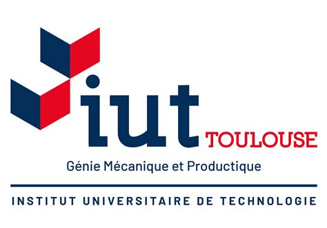

Parcours scolaire

Diplôme d'Ingénieur Génie Industriel 4.0 en apprentissage
L’ingénieur Génie Industriel 4.0, conçoit et gère des processus et des systèmes qui améliorent la qualité et la productivité de la chaîne de valeur des entreprises. Il s’attarde à mieux faire les choses en réduisant les risques pour l’homme et l’environnement.

BUT spécialité Génie mécanique et productique - parcours Management de process industriel
Le Bachelor Génie Mécanique et Productique (GMP) forme aux fonctions d’encadrement technique et professionnel, dans toutes les étapes de la vie d’un produit. La formation dispensée sur le site de Toulouse comprend une orientation Techniques Aérospatiales.
X Fermer